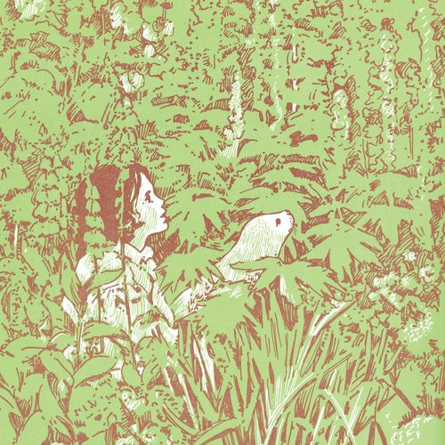
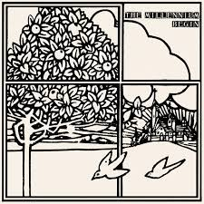

Hi, here are some album/song recommendations from four different genres of music.
1. PopAlbum: Pet Sounds by The Beach Boys
This album contains some of the most incredible moments of music that man (Brian Wilson) has ever composed. Pet Sounds has consistently been lauded as one of the greatest albums of all time, and it is certainly deserving of that title even 55 years after its release. Pet Sounds is full of intricate melodies, stunning orchestrations, polyphonic harmonies, and beautiful lyrics, yet it remains very accesible for any listener. The lyrics of songs such as "That's Not Me" and "I Just Wasn't Made for These Times", are touching, qualities that I've never heard replicated this well in any other music. Part of the reason why I hold Pet Sounds in such high regard is because of how many perspectives the album can be listened from. Every song is so dense and full of sound, that I've "discovered" new melodies and instruments from songs I have heard countless times. It's honestly pretty difficult for me to fully put into words how much this album means to me, it is incredible and you should absolutely go listen to it.

2. Jazz/Classical
Song: Rhapsody in Blue by George Gershwin
Probably one of the most recognizable pieces of classical music and jazz, Rhapsody in Blue is uniquely American and paints a very vivid picture of New York City at the height of the Roaring 20's. It's energetic, somewhat introspective, and full of soul. My favorite part of the piece is the "Love Theme" around the 10 minute mark, it's more subdued than other parts of the piece and feels very sentimental.
3. Shoegaze
Album: Ceres & Calypso in the Deep Time by Candy Claws
I've only first heard this album a bit more recently, but it has quickly become one of my favorites. A lot of the melodies and instrumentation remind me of Pet Sounds, actually. It's hard for me to explain why, but songs like "New Forest(Five Heads of the Sun)" and "Fell in Love(At the Water)" have a very nostalgic quality to them, even if that was probably not the intent of the artist. The melodies of these songs instantly transport me to my earliest childhood memories, even though none of these songs existed at that time. The album's lyrics are centered around Ceres and her seal companion Calypso, as they traverse through the Earth millions of years ago.
4. Psychedelia
Album: Begin by The Millennium
This album is lighter than most psychedelic albums that came out around the same time, but it's still a super enjoyable record. Musically, it's pretty similar to Pet Sounds(maybe my music tastes could just be described as Pet Sounds and anything that sounds like Pet Sounds) as it's got a lot of lush orchestrations, layered harmonies, and some folk sensibilites. Most of the lyrics discuss mundane topics, like the early morning or imaginary islands. They're perfectly fine though, songs don't need to have self-conscious or deep lyrics. Anyways, Begin is a great album and I put it on my list because it's one that a lot of people most likely haven't heard about yet.